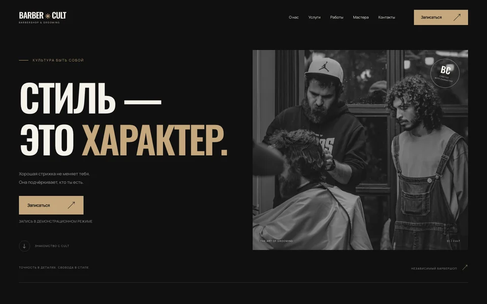

BARBER CULT
Демонстрационная концепция
Тёмная эстетика и типографика с характером.
Смотреть кейсNOVARY — digital-студия, которая объединяет дизайн, разработку и современные AI-инструменты для создания цифровых продуктов.
Лендинги, корпоративные сайты, веб-приложения и AI-решения для бизнеса.
Ideas into digital reality.
NOVARY — молодая студия. Мы развиваем её вокруг понятных принципов: разобраться в задаче, придать ей форму и проверить результат.
Уточняем, как устроен бизнес, кто будет пользоваться продуктом и какое действие для него важно. Цель помогает определить структуру, функции и приоритеты первой версии.
Продумываем, что человек увидит первым, где найдёт нужную информацию и как сделает следующий шаг. Типографика, композиция и детали помогают сделать интерфейс выразительным и понятным.
Выбираем технологии под задачу и согласованный объём работ. Применяем AI там, где он полезен для исследования, подготовки или разработки, и проверяем полученный результат.
Каждый этап уточняет предыдущий. Возвращаемся к исходной задаче, чтобы решения оставались связанными между собой.
Формулируем, что хотим изменить и для кого.
Изучаем контекст, аудиторию и возможные решения.
Связываем содержание, сценарии и визуальную систему.
Превращаем согласованные решения в работающий интерфейс.
Проверяем сценарии, готовим проект к публикации и передаче.
AI помогает ускорять подготовку и разработку. Каждый результат проходит проверку.
Используем AI, чтобы быстрее сравнивать подходы, готовить черновики структуры и текстов, искать варианты интерфейса. Решения соотносим с задачей и аудиторией.
Применяем инструменты для подготовки материалов, помощи с кодом и автоматизации рутинных операций. Это оставляет больше внимания содержанию и деталям продукта.
Редактируем материалы, проверяем факты, тестируем код и пользовательские сценарии. AI может ошибаться — ответственность за решения и контроль качества остаётся у нас.
Две демонстрационные концепции для портфолио NOVARY. Вымышленные бренды и настоящие интерфейсы, которые можно изучить.
Расскажите о своей идее и задаче бизнеса. Вместе определим, какой цифровой продукт поможет её решить.
Можно начать с короткого сообщения — готовое техническое задание не требуется.
Обсудить проектTelegram-канал пока недоступен. Пожалуйста, зайдите позже.